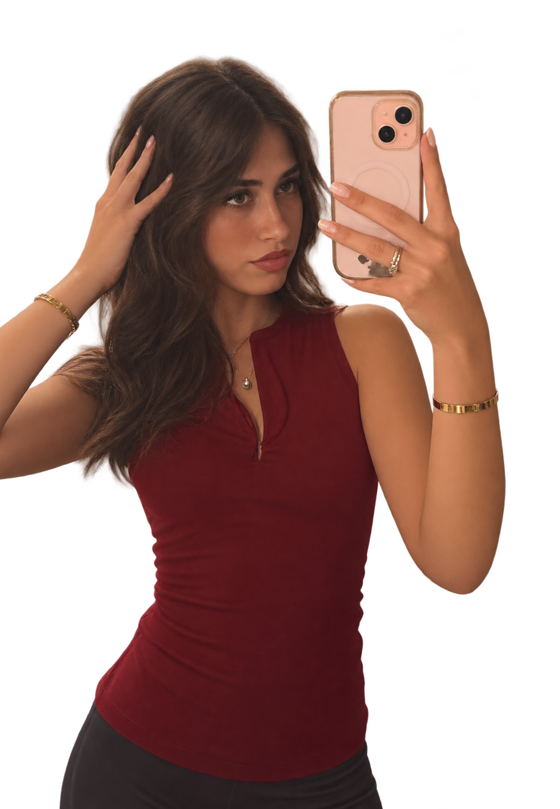

BAKOM KAMERAN
Om mig
Hej! Jag är fotografen bakom den här bildserien. Jag tycker om att fånga miljöer, färger och små detaljer som berättar något om en plats eller ett ögonblick.
I den här laborationen har jag utforskat hur bildredigering kan förstärka ett fotografi utan att ta bort känslan från originalet. Jag har arbetat med ljus, färg och retuschering.
Tack för att du tittar!
